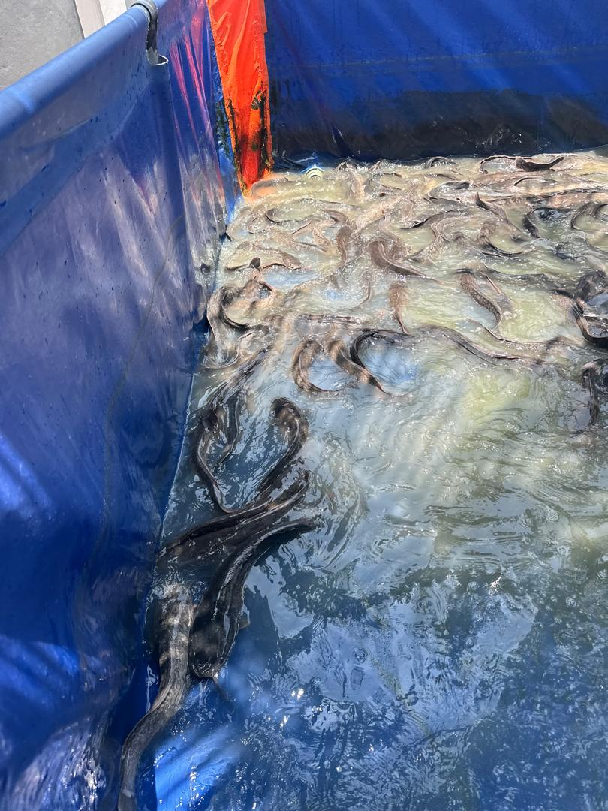
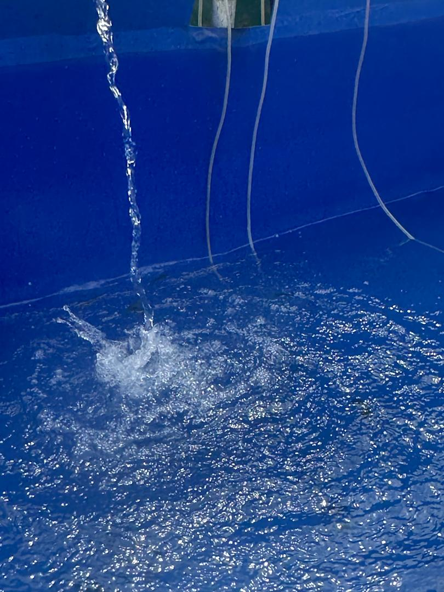
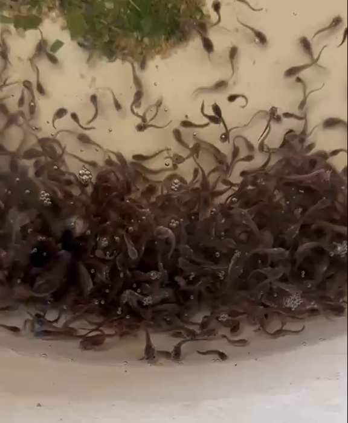
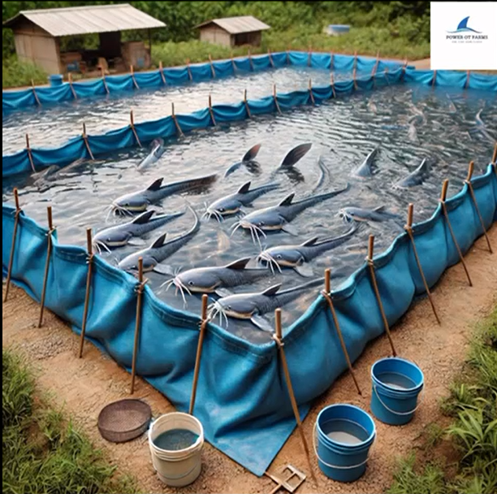

How We Do It
Our Sustainable Process

1. Eco-Friendly Hatchery
Our process begins in a state-of-the-art hatchery where we ensure the highest survival rates and genetic quality, without the use of harmful chemicals.

2. Pure Water Source
Our fish are raised in pristine, earthen ponds fed by natural water sources. We continuously monitor water quality to mimic their natural habitat.

3. Organic Nutrition
We are committed to providing our fish with high-protein, organic feed, ensuring they are healthy, nutritious, and free from antibiotics.

4. Ethical Harvesting
We use humane harvesting techniques to minimize stress on the fish, which preserves the quality, texture, and flavor of the final product.